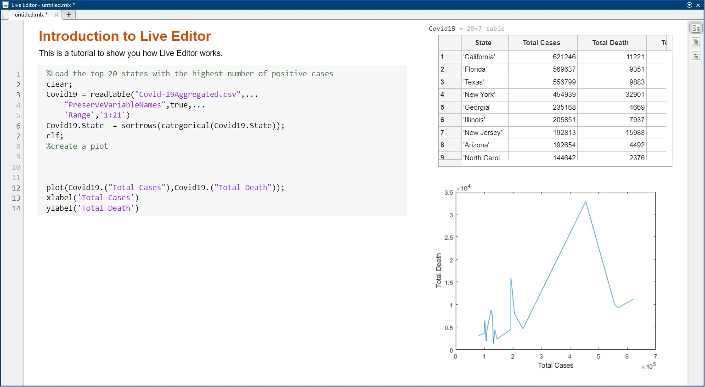
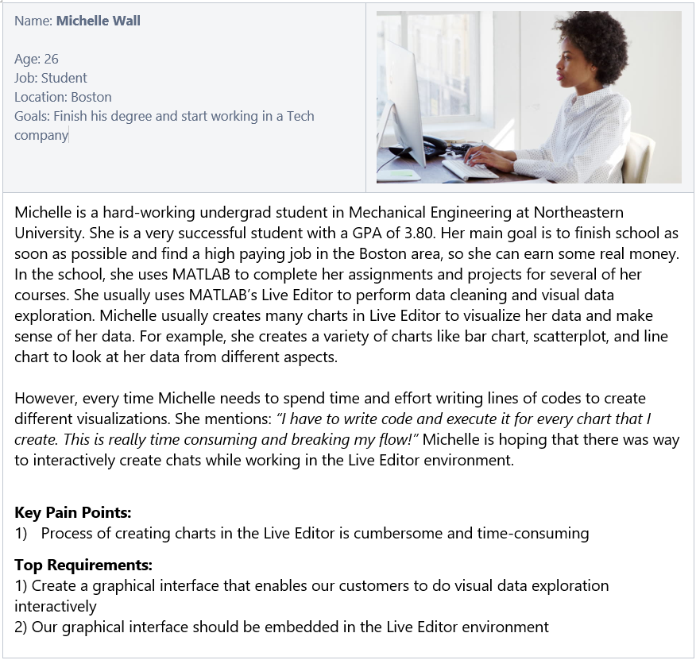
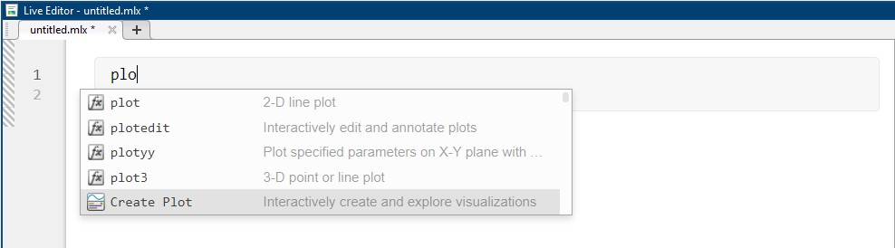
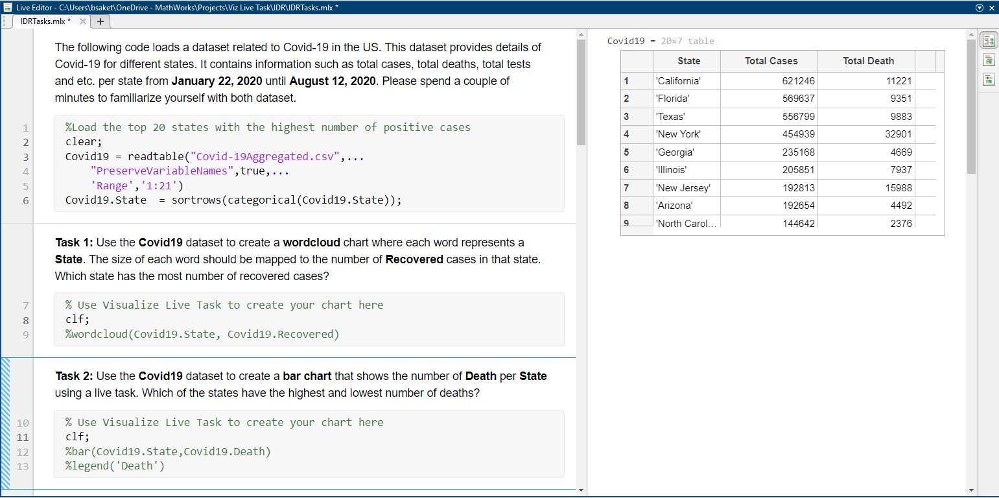

Create Plot Live Task in MATLAB
About
Live Editor in
MATLAB is an environment that allows users to write and run their scripts in an executable
notebook (similar to Jupyter notebook). To create charts in Live Editor in MATLAB users need to write
scripts. But, according to our customers the current process of creating charts in the Live Editor is
rather cumbersome, time-consuming, and occasionally error-prone.
To address this challenge, we designed Create Plot Live Task, an interactive tool for
discovering and building charts rapidly. Create Plot Live task is an interactive graphical user
interface that can be embedded to the Live Editor in MATLAB. Customers can use Create Plot live task to
interactively create a variety of charts and explore their data. Create Plot live task is
currently integrated to the MATLAB software.
My Role
As a UX Researcher, my main responsibilities included:
- 01. identifying and creating users profiles, personas, and scenarios
- 02. participating in design discussions with a cross-function team
- 03. planning and condcuting remote observations and interviews
- 04. generating a stream of insights based on the condcuted studies and communicating them to different stakeholders
Duration
4 months
Teams Involved
Engineering, Design, Product
...
Background
Live Editor in MATLAB is an environment that enables MATLAB users to write and run their scripts in an executable notebook as shown below. It allows users to create and share documents that contain live code, equations, visualizations and explanatory text. MATLAB customers use Live Editor for live data cleaning and transformation, numerical simulation, statistical modeling, machine learning and much more. MATLAB users create a variety of charts to visualize and make sense of their data. This is an iterative process and users frequently create a variety of visualizations to explore different aspects of their data. To create charts in Live Editor users need to write lines of codes and this process is rather cumbersome, time-consuming, and error-prone.
- 

...
User Research
Talking to the Stakeholders
Before starting the project, I held meetings with our cross-functional team to discuss important topics, including customer challenges and feedback on existing issues with Live Editor's visual data exploration. We established project goals, research questions, and deadlines during these meetings. These discussions helped me better understand our potential users, objectives, and expected deliverables-
What are the main needs and requirements of our customers?
-
What are the key deliverables?
-
What are the main deadlines?
Understanding the customers, product, and domain
Bases on the initial research that I have done, I took another step in understanding our users by creating a use profile.
| Age | 18 - 55 years |
| Job titles | Engineer, Student, Research Scientist, Professor |
| Experience Level | Beginner, Casual, Power |
| Education | Bachelor, Masters, PhDs |
| Location | Anywhere |
| Disabilities | None, color-blind, visually impaired |
I also created multiple personas to give our users file and help team members feel connected to team. Creating personas also helped to get everyone in our team on the same page by encouraging all team members to think about the same persona, instead of each individual working toward his/her own vision of who the end user is.
- 
...
Design Process
We had several meeting with our cross-functional team to brainstrom sevaral ideas and come up with design guidelines. During these meetings we established the following set of design guidelines.| Guideline | Priority |
|---|---|
| Create Plot Task will present different charts to allow the user to find the best visualizations for the selected data and attributes. | Must Have |
| Create Plot Task will present live previews of charts to allow the user to explore different charts and find the best one for visualization. | Must Have |
| Create Plot Task will recommend the best chart for visualizing the data-set. | Nice to Have |
| Create Plot Task will generate appropriate defaults e.g. Title, Labels, and Legend based on the input to the chart. | Must Have |
| Create Plot Task will present the recommended chart and all feasible charts to the user. A feasible chart might not be possible with the selected data but can work if more data or visual channels are added. Create Plot Task will not present charts that are inappropriate for the data. | Must Have |
Click here to see how Create Plot Live Task in MATLAB works.
...
Usablity Testing
To evaluate our design, we used both think-aloud observation and interview methods, 1) to understand our customers' processes, 2) to measure their success rate and overal experience, 3) to identify different approaches our customer take to discover our feature, and 4) to reveal barries of using our feature. We recruited five of our external customers with different backgrounds including neuroscience, mechanical engineering, computer science, and electrical engineering. All studies were conducted remotely. We screen- and audio-recorded the whole study.
Discoverability of our feature
We first briefied our participants about the purpose of our study and their rights. We also explained our
participants the main goal that our feature was trying to accomplish. We then asked our participants:
''What would you do to find this feature in MATLAB?'' At this stage, we wanted to
identify different approaches our participants might take and words/vocabulary they might use to find
our feature.
When we initially started this project, we aimed to call this feature "Visualize Live Task". But, after
conducting our study we noticed that majority of our customers used the terms "plot" and "creating plot"
to search for our feature. As a result of these observations, we decided to change the name of this
feature to "Create Plot Task" going forward. Our another observation was that four participants tried to
open our feature by typing "plot" or "chart" keywords in Live Editor. He then mentioned: "I
will probably type plot to see what options the system gives me. Auto completion is a good way
to cheat on new methods [features]". Based on our findings, we also added an
auto-complete feature that allows users to open the feature by typing keywords related to plot,
charting, visualization (see figure below).
- 
Customers success rate and experience with our feature
To measure the participants' success rate and overall experience, we asked them to complete 6 different tasks using our feature. Five of the tasks required user to create a new chart or replicate an existing chart (e.g., Use the Covid19 dataset to create a bar chart that shows the number of Death per State). We also had a task that asked our participants to use our feature to visually explore their data by creating as many charts as they want (exploratory analysis). We designed these tasks through an iterative process based on several discussions that we had among the team members. Different team memebers reviewed the tasks before using them in our actual study. The figure below shows some of the tasks we used in our study.
- 
Overall, our findings showed that all participants were able to complete all tasks without reqiring the facilitator's assistant while performing the tasks. We also got positive feedback about the Create Plot Task feature. This feature made it really easier for people to explore different charts. Our participants constantly selected different charts and made sense of their data from different aspects. For example, as one of our participants was exploring different charts, he came across a word cloud visualization and said: "hmmm, Interesting! Is this new? This is pretty cool. Did not know MATLAB enables this [creating word cloud]." Another participant noted: "It is super easy to interactively create charts using this feature." Our observations also showed that it is important to name different visualization parameters appropriately, so that our customers could mentally imagine how they should be specify them while creating charts. For example, in the example below, after selecting the line plot icon, the system asked the participant to specify x and y axes. Here, our participants had an easy time to mentally imagine what x and y prameters mean. See the following figure for more details.


Key Takeaways
- 01. Market understanding is important in addition to user research to gain insight into the competitive landscape, industry trends, and any legal considerations that may impact the project.
- 02. UX designers should consider the broader business strategy and goals of the organization, such as how the product fits into the business model, key metrics for success, and any financial or operational constraints.
- 03. Being flexible and adaptable in approach is key to handling unexpected obstacles or changes in direction that may arise during a project.